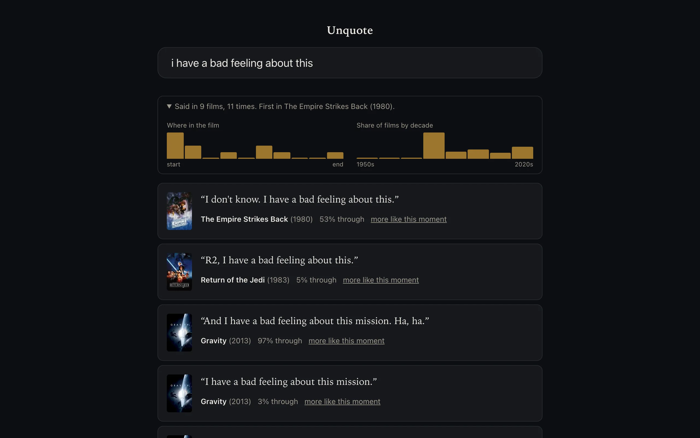
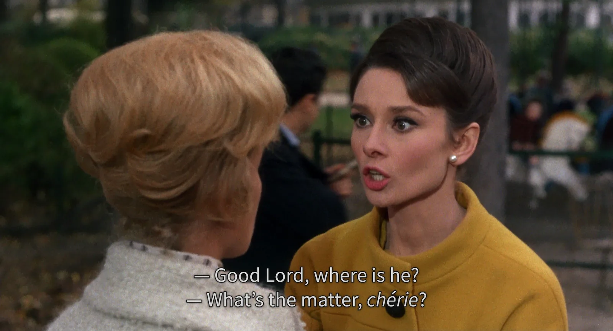

I built Unquote to settle quote arguments. It searches the dialogue of 2,644 films. Type a quote and it finds the line. Type the quote the way you misremember it and it finds the line you meant. Describe a scene in words no character says ("a boy in leg braces outruns the bullies chasing him") and it finds the moment. The front end is SvelteKit. Everything else, the text, 3.7 million line vectors, 620,000 scene vectors, the HNSW indexes over them, and the analytics, lives in one ClickHouse server. I wanted to know whether I needed a separate vector database. I didn't.
Getting the text
Film metadata comes from TMDb. Dialogue is parsed from the transcript pages on Springfield! Springfield!. The extractor finds each film's slug through the site's own search, checks the year, and splits the script on <br> tags into subtitle cues. Every HTTP response is cached on disk under a SHA1 of its URL and everything downstream runs against that cache. Going to the network needs ALLOW_NETWORK=1, because I've had a bug turn into a crawl before and didn't want another.
The primary source misses or mangles a lot of films, including ones people search first. So there are rescue and upgrade passes: IMSDb screenplay drafts, a second transcript site, and an OpenSubtitles queue that downloads five subtitle files a day, which is the free tier. A replacement only ships if it scores better than what it replaces. Each stage reads and writes JSONL, so any one of them reruns on its own.
Cues are not lines

.jpg){kind=link}
Subtitle cues are display fragments. Sentences split across cues, two speakers share a cue behind - markers, and OCR damage is everywhere. The utterance builder rebuilds spoken lines from ordered cues. Dash-marked turns split apart. A fragment that starts lowercase merges into the previous buffer unless that buffer ended on ? or !. An ellipsis handing off to an ellipsis rejoins one thought split for timing ("Get busy living... / ...or get busy dying.").
Lyrics were the worst of it. Music-marked cues act as anchors, nearby anchors bridge into intervals, and interval edges extend over unpunctuated neighbours. A second detector catches unmarked songs by shape, long runs of title-case cues that never end in punctuation, but it only fires unconditionally at sixteen cues or more, because Interstellar's recited "Do not go gentle" reads exactly like a verse. OCR repair is gated the same way. The capital I and lowercase l confusion ("lf you build it", "wouIdn't") is rewritten only in films showing at least three instances of it, so a clean transcript where "lt." is a lowercased Lieutenant is never touched. What remains is 3,728,457 utterances across 2,644 films, each carrying its position in the film as a 0-to-1 arc.
Every film also gets a quality score from punctuation density, hit rate against a thousand-word English dictionary, OCR artifacts per thousand cues, and mean cue length, weighted 0.3, 0.3, 0.3, 0.1. The worst decile carries a downrank flag, and a transcript with over 200 tokens and a dictionary rate under 0.2 is flagged as not English. Both flags gate the fuzzier search arms, because a wrong-language transcript matches its own language, not meaning.
Vectors in ClickHouse
Lines embed with bge-small-en-v1.5 (384 dimensions, mean pooling). Beats, scene summaries, and segments embed with bge-base-en-v1.5 (768). The same models have to encode stored rows and live queries, so the web app runs quantized ONNX ports of both through Transformers.js, warmed at boot. The corpus itself embeds on an Apple GPU through sentence-transformers on MPS, 3.4x faster than the JavaScript path, which stays around as the reference. Any runtime or model change has to pass a validator requiring per-row cosine of at least 0.999 against the reference vectors.
The lines table is a MergeTree ordered by (movie_id, seq) with two skipping indexes: a tokenbf_v1 bloom filter over the normalized text for keyword search, and a vector_similarity HNSW index over the embedding, cosine distance, bf16 so it takes half the memory. HNSW answers a nearest-neighbour query in under 100 ms where a brute-force scan takes over a second. Loads never touch live tables. Each load writes staging tables without the index, builds the index once after all rows land, then swaps with EXCHANGE TABLES. The scene-level tables build their indexes one at a time under a memory cap, because two HNSW builds in parallel have taken the box down.
Ranking
A search fans out to arms that run in parallel. The title arm catches queries that are a film title. The exact arm finds verbatim substrings with position() over normalized text. The keyword arm requires every query token via hasToken(), splitting on apostrophes because ClickHouse's tokenizer indexes "you're" as "you" and "re". The semantic arm embeds the query and takes the hundred nearest line vectors. The lists merge with reciprocal rank fusion (Cormack, Clarke, and Buettcher, 2009):
RRF scores top out around 0.05, and any hit the exact arm found gets a flat +1, so verbatim matches always outrank fuzzy ones. Within the exact set, the order is fame. Identical lines embed identically, so among films that all say the words every arm ties, and TMDb vote count is the only signal left. A film that repeats a line ("May the Force be with you" four times in one movie) collapses to its best occurrence with a count. A divider goes after the strong hits, at the largest relative score drop in the top 20 when that drop is at least 1.5x. When the top hit came from the semantic arm alone and sits one to three word substitutions from the query, it gets marked as the line you were probably trying to remember, with the changed words highlighted by a word-level alignment. A curated list handles the famous misquotes ("Luke, I am your father") the same way.
A query matching verbatim lines in at least eight films earns a phrase card instead: film and occurrence counts, the earliest film to say it, a histogram of where in a film's arc it lands, and per-decade usage normalized by how many corpus films each decade has, so thin coverage of the 1940s can't look like a trend.
Search quality is pinned by 53 real remembered-quote queries, each asserting its film appears within the top few results, run as a Playwright scoreboard. Three of them are marked as known gaps rather than failures. "Say what again, I dare you" misses because the transcript says "dare ya" and no arm matches exactly. A query for The Abyss gets outranked by literally deeper films at full corpus. And one is a visual scene description that dialogue-only embeddings can't see.
Scenes, and what a scene resembles
A query with no exact match is usually a memory of a scene rather than of words. Two more arms join in that case. The beats arm searches windows of twelve utterances at stride six, so every line belongs to about two beats. The summaries arm searches generated scene summaries, which matter because they're written in event language, the register a memory is in. Both embed in the same 768-dimension space, so their distances merge into one list, and a summary hit maps back to the beat opening the summarized span. Ranking uses the summary, the screen only shows real dialogue.
Above beats sit segments, scene-sized spans cut where consecutive beats stop resembling each other. A boundary opens where the cosine between adjacent beat vectors falls below the film's own mean minus one standard deviation. A segment's vector is the normalized mean of its beats, a film's vector the normalized mean of its segments. Film-to-film similarity scores each segment's best match against the other film, subtracts that segment's mean best across all films so dialogue that matches everything contributes nothing, then blends 70/30 with TMDb similarity over genres, decade, and keywords. The top twelve neighbours per film load into ClickHouse.
Universal filler (greetings, arguments, "How is it? Horrible") sits near everything in embedding space and wins raw-cosine matching. So every beat and every summary carries a genericness score, the mean cosine to its top 32 nearest cross-film rows, and the scene-level surfaces subtract it. I estimate it against a fixed seeded sample of 10,240 rows rather than computing it exactly. The comment in generic.py justifies that with "6e17 flops, a day of GPU", which is off by a thousand: 619,859 beats at 768 dimensions is about \(6 \times 10^{14}\) flops for the full all-pairs product, a minute or so on the same GPU. Exact would have been fine. The sample stays because it's what shipped and I've never checked it against the exact answer.
Every film page has a timeline where clicking a scene shows its summary, its dialogue, and the nearest moment in each other film. Comparing two whole films (/movie/a/vs/b) finds candidate parallels in summary space, requiring a candidate to be a spike at least 0.05 above what its scene scores against the whole other film on average, because a franchise's shared texture is high everywhere and peaked nowhere. Each candidate then has to be corroborated in dialogue space, with genericness subtracted on both sides so films never bridge through their most ordinary scenes. Fewer than two passing pairs shows an empty page. I tuned the thresholds on a comparison harness where Toy Story vs Se7en has to come out empty while related pairs keep three to five parallels.
The generated layer
Scene summaries and each film's five signature lines are generated offline by a language model driven headless from the build, and nothing it says is trusted. Five-quote picks must match a real transcript line or they're dropped. Summaries are generated per segment window under a prompt that forbids proper nouns absent from the window, spoilers, and judgment words, and requires per-claim evidence as seq ranges. A lint rejects rows that break any of it. The store is append-only JSONL keyed by input hash and prompt version, so a prompt bump regenerates only what changed.
One box
Production is a single netcup VPS (8 vCPU, 16 GB) running three containers under Docker Compose: ClickHouse, the SvelteKit server with the model weights baked into the image, and Caddy for TLS. ClickHouse binds to localhost. The app connects as a user that can read the corpus and insert only into the analytics tables. Analytics are first-party and cookie-free: visitors count by an FNV-1a hash of IP and truncated user agent that rotates daily, and Do Not Track is honoured. There are no backups. A lost box rebuilds from the local pipeline artifacts and the provisioning script in under an hour.
The plan also had a cliche index, a gallery of twin scenes, and a daily twin pair on the homepage. None of those exist yet. The site is the search box, the film pages, and the bridges.